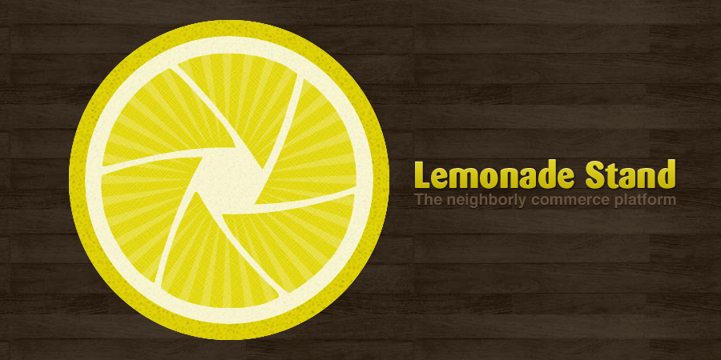

Lemonade Stand
I was on the StartupBus and only had 48 hours to complete this project with a team of 5 others. I designed the logo and both Android & iPhone UI for our team. All the hard worked help the team reach the semifinals, finishing in the top 12 of 38 teams. After SXSW we where celebrated as an impressive technical achievement at New York Tech Meetup's Hack of the Month.



Press
- TechCrunch - Behind The Scenes At The New York Tech Meetup (TCTV)
- Wired - Team WalkIN Rolls Into StartupBus Finals, Cruising on Camaraderie
- Inc. - Ideas From SXSW: What You Missed This Weekend
- CNN - The quirky side of SXSW
- CNN Money - Get on the bus
- Ad Age - How to Stand Out at SXSW? Lessons From GroupMe and a Pushy Lemonade Stand Guy
- PC Mag - On SXSWi-Bound Startup Bus, Tech Entrepreneurs Race to Hatch New Businesses
- ReadWriteWeb - Brewed on the Startup Bus En Route to SXSW: Lemonade Stand
- The New York Observer - Bus Hackathon Companies Being Taken Really Seriously
- The New York Observer - Tour Diary: 48 Hours With 30 Hackers on a Bus
- The New York Observer - Check Out the Six Companies Born on the NYC Start-Up Bus
- The New York Observer - Finalists Announced for Startup Bus Competition
- Beta Beat - New Dawn: What You Missed at New York Tech Meetup
- Beta Beat - Start-Up News: Tumblr Down as Foursquare Steps It Up, Plus Tonight's NYTM Should Be Interesting
- The Huffington Post - Busloads Of Entrepreneurs Launch Startups On 56-Hour Road Trip
- The Forrst Podcast - Dinosaurs And Aliens
- genConnect - 2.5 Minutes With John Britton
- föerderland - Die interessantesten Konzepte der Startup-Busse
- The Examiner - Chris Jeane: Busepreneur
- Think - Stony Brook Student Helps Build a Startup on the Way to SXSW
- Jeffrey Donenfeld - Notes from the April New York Tech Meetup...
- Sleepless in Social Media - NYTech meetup - Lemon Stand, Readability, Runens, EXFM, MeeGenious
- The Flack - April in Tech New York
- NYConvergence - April NY Tech Meetup: Genius, Messages, Music and a Lemonade Stand (#NYTM)
- WP7 Connect - Lemonade Stand: Buy and Sell Locally on WP7
- ProgrammableWeb - 27 New APIs: Location, SMS and Thomson Reuters
- ProgrammableWeb - Buy And Sell Locally With Lemonade Stand
- CodeCube - Lemonade Stand for WP7
- Riviera Maya Jungle Retreat - On SXSWi-Bound Startup Bus, Tech Entrepreneurs Race to Hatch New Businesses